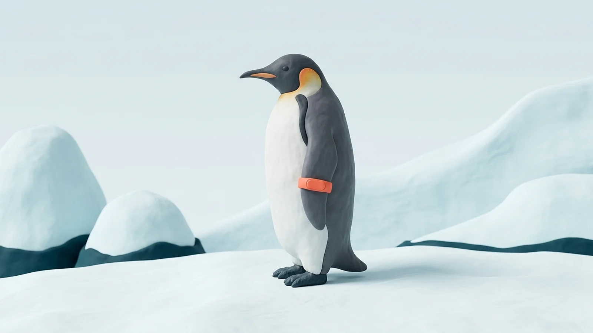
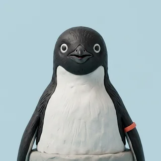

Waddle is the flipper-worn activity band built for flightless seabirds. Steps, dives, huddle rotations. All of it on one dashboard, reviewed weekly, whether you asked or not.
Ships in flocks of 40. Banding is permanent. So is the data.

Close your Waddle, Dive, and Shiver rings every day. Shivering counts as light cardio, which is why the bar for it is higher. Rings reset at midnight, a concept we are introducing to the Antarctic.
avg. colony close rate: 12% · target: 100% · gap: yours to close
Every band ships with nine sensors, three of which we have identified a purpose for.
Sliding on your stomach is efficient, which is why it counts as zero steps. Waddle logs every toboggan as sedentary time and raises your daily step goal to compensate.
Positional sensors track your place in the huddle to the centimeter. Linger in the warm middle and your entire rookery receives the report. Warmth is a shared resource. Act like it.
Log one cold-water dive a day to keep your streak alive. Streaks pause for nothing, including molt, during which you physically cannot enter the water. Champions find a way.
Collected during exit interviews. Participation was mandatory.
“I spent 61% of winter at the edge of the huddle. Now there is a chart, and everyone has seen it.”

GaryEdge Position Specialist, Huddle 12, Cape Crozier“Waddle flagged my toboggan commute as sedentary. I walk now. It takes four hours.”
“We banded 4,000 birds in November. Engagement is up 300%. We have not defined engagement.”
All plans include the band, the guilt, and a monthly PDF nobody requested.
For colonies still in denial.
$0
Accountability at population scale.
$14 /penguin/mo
For the serious brooder.
$2,400 /yr
The live dashboard for Huddle 12, Cape Crozier. Sixty-one percent huddle compliance and dropping. Someone should nudge them. It could be you.
open the demo →